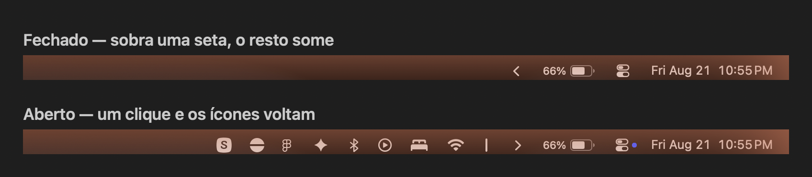
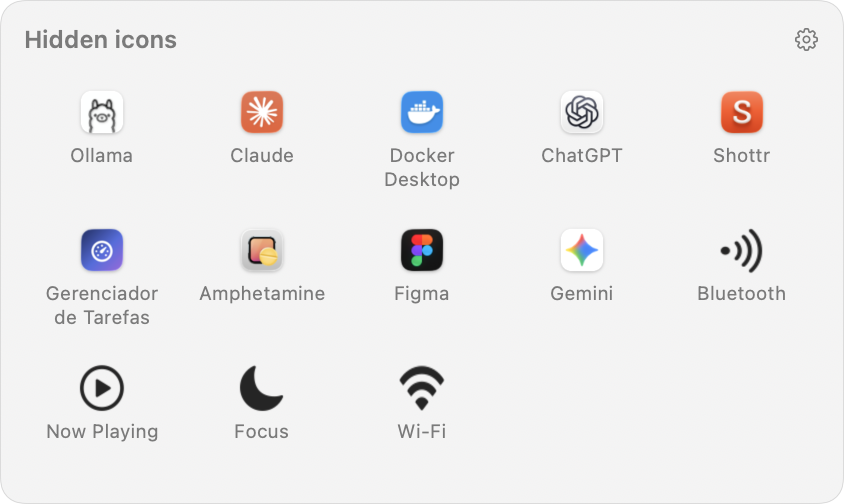

A bandeja do Windows, na barra de menus do Mac. The Windows tray, on the Mac menu bar.


O macOS não tem área de excesso na barra de menus. Quando a barra enche — e num MacBook o notch come metade dela — os ícones novos são descartados em silêncio: eles nascem na ponta esquerda, justamente onde o notch e os menus do app estão. Nada avisa; o ícone simplesmente não aparece.
macOS has no overflow area on the menu bar. Once it fills up — and on a MacBook the notch eats half of it — new status icons are dropped silently: they are laid out at the far left, exactly where the notch and the app menus sit. Nothing warns you; the icon just never shows up.
Abre a bandeja com os ícones ocultos. Clique de novo para fechar. Opens the tray with the hidden icons. Click again to close.
Decide o que fica escondido: à esquerda da seta some, à direita continua visível. Decides what gets hidden: left of the arrow collapses, right of it stays visible.
Revela também a área sempre oculta, para o que você quase nunca precisa ver. Also reveals the always-hidden area, for what you almost never need to see.
Preferências, Sobre e Sair. Preferences, About and Quit.
Baixe o .zip da release, arraste o app para Aplicativos e abra.
Quem preferir compilar:
Download the release .zip, drag the app into Applications and open it.
To build it yourself:
git clone https://github.com/NspxMiguel/MacTray.git
cd MacTray
./build.sh
cp -R build/MacTray.app /Applications/A bandeja precisa da Acessibilidade: é o único jeito que o macOS dá para um app enxergar os ícones dos outros e abrir o menu deles. Nada além disso — sem Gravação de Tela em momento nenhum. Desligue a bandeja nas Preferências e o MacTray não pede autorização nenhuma: a seta continua recolhendo e devolvendo os ícones para a própria barra.
The tray needs Accessibility: it is the only way macOS lets an app see other apps' icons and open their menus. Nothing beyond that — no Screen Recording at any point. Turn the tray off in Preferences and MacTray asks for nothing: the arrow still collapses and restores the icons onto the bar itself.
O binário também controla a instância que já está rodando — serve para Atalhos, Raycast ou um script:
The binary also drives the running instance — handy for Shortcuts, Raycast or a script:
MacTray.app/Contents/MacOS/MacTray --toggle
MacTray.app/Contents/MacOS/MacTray --show-all
MacTray.app/Contents/MacOS/MacTray --preferences